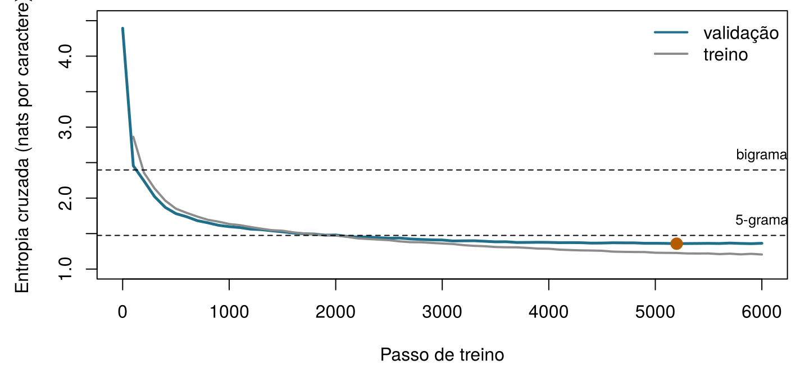

| Modelo | Pesos | Blocos N | Dimensão d | Contexto (tokens) | Vocabulário | Texto de treino |
|---|---|---|---|---|---|---|
| GPT do navegador (este capítulo, NumPy) | 107 200 | 2 | 64 | 32 | 79 | 217 501 caracteres |
| GPT maior (este capítulo, PyTorch) | 811 648 | 4 | 128 | 64 | 79 | 217 501 caracteres |
| GPT-2 small (Radford et al. 2019) | 117 milhões | 12 | 768 | 1 024 | 50 257 | cerca de 40 GB de texto da web |
| GPT-3 (Brown et al. 2020) | 175 bilhões | 96 | 12 288 | 2 048 | 50 257 | 300 bilhões de tokens vistos |
18 Treine seu primeiro GPT
Um GPT é treinado para fazer uma única coisa: prever o que vem a seguir. Nosso modelo vai prever o próximo caractere. Antes de qualquer código, jogue você mesmo: qual caractere vem a seguir? (O texto está em inglês, a língua do livro.)
| Texto até aqui | Próximo caractere |
|---|---|
Notes on Nursin |
|
fresh ai (ar fresco) |
|
the sick-roo (o quarto do doente) |
|
Florence Nightingal |
Como usar este capítulo
Começando por aqui?
Este capítulo reúne as ideias dos três capítulos anteriores e do Capítulo 7. Em poucas linhas:
- O texto é dividido em tokens retirados de um vocabulário \(\mathcal{V}\); os tokens podem ser palavras, pedaços de palavras ou caracteres isolados (Capítulo 15).
- Um modelo de linguagem atribui uma probabilidade a cada próximo token possível, \(P_\theta(w_t \mid w_{<t})\). Pela regra da cadeia, a probabilidade de um texto inteiro é o produto dessas probabilidades do próximo token. Um modelo é avaliado pela sua entropia cruzada em um texto reservado, a média de \(-\log P_\theta(\text{próximo token observado})\), ou, de forma equivalente, pela sua perplexidade, o número efetivo de escolhas entre as quais ele hesita. O texto é gerado por amostragem, com uma temperatura e um top-\(k\) que moldam a distribuição (Capítulo 16).
- Um transformer transforma cada token em um embedding mais uma codificação posicional e passa os vetores por blocos de autoatenção com múltiplas cabeças causal e de uma rede feed-forward, cada um com normalização de camada e uma conexão residual. Um GPT é uma pilha desses blocos com máscara causal, treinada na previsão do próximo token (Capítulo 17).
- Os pesos de uma rede neural são aprendidos por descida do gradiente, com gradientes calculados por retropropagação, em lotes, ao longo de várias épocas; um conjunto de validação mostra quando a rede começa a sofrer sobreajuste, e a parada antecipada guarda os melhores pesos (Capítulo 7, Capítulo 3). Um modelo é uma representação simplificada construída com um propósito (Definição 1.3).
| Exemplo | Quem ou o quê | Desfecho | Rostos que você vai conhecer |
|---|---|---|---|
| 1 UTI Ala 7 | 1.250 pacientes de UTI em 4 hospitais | variação da creatinina em 48 h (lesão renal aguda se ≥ 0,3 mg/dL) | Aoife (71 anos, sepse, risco limítrofe), Tomás (54 anos, risco baixo), Priya (38 anos, risco alto); a Dra. Emma Walsh; Seán, o farmacêutico |
| 2 Ensaio ONCO-1 | 1.000 pacientes randomizados para quimioterapia ou não | redução do tumor (%) | pacientes #0042 e #0917 |
| 3 HomeBeat | 500 pessoas que usam um relógio inteligente em casa | escore de estresse, evento de deterioração | Lena |
| 4 CellWorks | 420 lotes de produção de uma terapia celular | escore de potência | lote CW-118 |
Os quatro conjuntos de dados são simulados e podem ser baixados no apêndice de dados. A apresentação completa está na Seção 1.1.
Por uma noite, este capítulo deixa de lado os quatro exemplos recorrentes: seus dados são um livro real, de domínio público, escrito em 1859, que não descreve nenhum paciente de hoje.
Este capítulo treina um GPT do início ao fim. Ele tem dez seções e um Lab, seis verificações rápidas, três widgets “Experimente”, um desafio e três missões de programação em R e Python. Reserve cerca de duas horas, mais alguns minutos de trabalho do seu computador. Dois tipos de código rodam no seu navegador: um GPT completo escrito em NumPy que você mesmo treina (Seção 18.5) e um modelo maior, treinado com antecedência, que você usa para escrever texto (Seção 18.7). Um notebook Jupyter permite treinar o modelo maior no seu próprio notebook ou no Google Colab (Seção 18.8).
Notação em resumo (apenas para consulta)
| Símbolo | Significado | Seção |
|---|---|---|
| \(\mathcal{V}\), \(V = \lvert\mathcal{V}\rvert\) | vocabulário (aqui: os caracteres distintos) e seu tamanho | Seção 18.2 |
| \(w_t\) | token (caractere) na posição \(t\) | Seção 18.2 |
| \(T\), \(B\) | comprimento do contexto (caracteres por janela); tamanho do lote (janelas por passo) | Seção 18.2 |
| \(d\), \(N\), \(h\) | dimensão do modelo, número de blocos, número de cabeças | Seção 18.4 |
| \(\mathbf{E}\), \(\mathbf{P}\) | matriz de embeddings de token (\(V \times d\)); matriz de embeddings de posição (\(T \times d\)) | Seção 18.4 |
| \(\theta\) | todos os pesos do modelo | Seção 18.5 |
| \(\mathcal{L}(\theta)\) | perda de treino: entropia cruzada média sobre todas as posições de um lote, em nats | Seção 18.5 |
| \(\mathbf{z}_t\), \(\mathbf{p}_t\) | logits e probabilidades do próximo caractere na posição \(t\) | Seção 18.5 |
| \(\nabla_\theta \mathcal{L}\), \(\eta\) | gradiente da perda; taxa de aprendizado | Seção 18.5 |
| \(\mathbf{m}\), \(\mathbf{v}\), \(\beta_1\), \(\beta_2\) | médias móveis do Adam e suas taxas de decaimento | Seção 18.5 |
| \(\tau\), \(k\) | temperatura de amostragem; número de tokens mantidos pelo top-\(k\) | Seção 18.7 |
A lista completa está na página de notação.
18.1 O plano: a mesma receita, em escala reduzida
Todo GPT, do primeiro (Radford et al. 2018) aos modelos dentro dos assistentes de hoje, é feito com os mesmos cinco passos (Figura 18.1). Reunir texto. Dividi-lo em tokens. Treinar um transformer para prever o próximo token em cada posição, por descida do gradiente na entropia cruzada. Repetir com muitos lotes até que a perda no texto reservado pare de cair. Gerar amostrando um token de cada vez. O que separa um modelo didático de um comercial não é a receita, mas a escala: a quantidade de texto, o número de pesos e a computação gasta no treino (Tabela 18.1).
Nosso modelo maior tem 811 648 pesos; o GPT-3 tem cerca de 216 000 vezes mais e viu, durante o treino, aproximadamente 24 400 vezes mais tokens do que o nosso modelo viu caracteres. Nada mais na receita muda. Esse é o ponto deste capítulo: depois de treinar o pequeno, você sabe o que foi feito, passo a passo, para criar os grandes. O que você não terá é a escala deles, e o Capítulo 19 explica o que a escala, e várias etapas adicionais de treino, acrescentam.
18.2 Os dados: caracteres como tokens
18.2.1 O corpus
Notes on Nursing é um livro curto, prático e opinativo. Nightingale o escreveu para “as mulheres que têm a seu cargo pessoal a saúde de outras pessoas”, e muito do que ela diz (ar fresco, luz, silêncio, limpeza, observação cuidadosa dos doentes) ainda é ensinado. O texto está em domínio público. Usamos a transcrição feita por voluntários do Distributed Proofreaders e distribuída como eBook #12439 pelo Project Gutenberg, que segue uma reimpressão de Nova York de 1898. O script ch18_prepare_corpus.py mantém apenas o texto do próprio livro: remove o cabeçalho e a licença do distribuidor, as notas do transcritor, as marcas de nota de rodapé e as duas tabelas estatísticas do apêndice, transforma as notas de margem de Nightingale em linhas curtas próprias e junta as linhas de cada parágrafo. O resultado, notes_on_nursing.txt, tem 241 668 caracteres, cerca de 43 000 palavras em 708 linhas.
Para um modelo de linguagem, este é um corpus minúsculo. O GPT-2 foi treinado com cerca de 8 milhões de documentos da web (Radford et al. 2019); Notes on Nursing ocuparia cerca de um quarto de megabyte. Poucos dados significam que o modelo pode aprender ortografia, pontuação, palavras comuns e algo da cadência de Nightingale, mas não muito mais: tenha isso em mente ao ler o que ele produz.
18.2.2 Caracteres como tokens
Nossos tokens são caracteres isolados. O vocabulário é simplesmente o conjunto dos caracteres distintos do texto: 79 deles, incluindo 54 letras (maiúsculas e minúsculas e algumas acentuadas), algarismos, pontuação, o espaço e a quebra de linha. A codificação substitui cada caractere pela sua posição no vocabulário ordenado; a decodificação faz o inverso. Nenhuma biblioteca de tokenização é necessária.
Essa é uma simplificação deliberada. Os GPTs do Capítulo 17 e os assistentes reais usam tokens de subpalavras construídos por codificação por pares de bytes (byte-pair encoding), de modo que uma palavra comum é um token e uma palavra rara é formada por alguns pedaços (Capítulo 15) (Sennrich, Haddow, e Birch 2016); o vocabulário do GPT-2 tem 50.257 deles (Radford et al. 2019). Os caracteres tornam o vocabulário minúsculo e cada token fácil de ler, mas há um preço: uma palavra de oito letras exige oito previsões em vez de uma ou duas, a mesma janela de contexto cobre muito menos texto, e o modelo precisa aprender a soletrar antes de aprender qualquer outra coisa. O modelo em si não se importa com o que é um token; ele vê apenas inteiros de 0 a \(V - 1\).
Execute as duas células abaixo. Elas leem o livro, constroem o tokenizador e mostram os primeiros caracteres como inteiros. (Neste capítulo, as células de cada linguagem dependem umas das outras: execute-as em ordem.)
Digite e tokenize. Digite qualquer texto: cada caractere vira o seu inteiro no vocabulário de Notes on Nursing. Tarefa: encontre um caractere que o modelo simplesmente não consegue ler. (Dica: o que ninguém digitava em 1859?)
18.2.3 Texto de treino e de validação
Guardamos os primeiros 90 % do livro (217 501 caracteres) para o treino e reservamos os últimos 10 % (24 167 caracteres) para a validação (Capítulo 3). A divisão é por posição, não aleatória: 10 % dos caracteres escolhidos ao acaso, ou mesmo das frases, deixariam o texto de validação cheio de trechos cuja outra metade está no texto de treino, e o modelo pareceria melhor do que é. Reservar o final do livro garante que o texto de validação seja realmente inédito. (Isso também significa que ele é um pouco diferente: o final do livro contém a conclusão e um apêndice sobre o número de enfermeiras na Grã-Bretanha, com mais números do que o restante.)
18.2.4 Cada posição é um exemplo de treino
Um lote é um conjunto de \(B\) janelas de \(T\) caracteres consecutivos, tiradas de posições aleatórias do texto de treino. Os alvos são as mesmas janelas deslocadas um caractere para a direita. Para a janela Fresh air (ar fresco), o modelo precisa prever r depois de F, e depois de Fr, s depois de Fre, e assim por diante: uma janela de \(T\) caracteres fornece \(T\) previsões, cada uma com uma quantidade diferente de contexto, todas calculadas em uma única passagem graças à máscara causal (Capítulo 17). Com as \(B = 32\) janelas de \(T = 64\) caracteres do modelo maior, um passo de treino faz \(32 \times 64 = 2\,048\) previsões. Nenhum rótulo foi necessário: o próximo caractere é o rótulo, e é por isso que esse tipo de treino se chama autossupervisionado.
Um lote contém \(B = 32\) janelas de \(T = 64\) caracteres. Quantas previsões do próximo caractere o modelo faz, e das quais aprende, em um passo de treino?
Monte os alvos. Os inteiros ids codificam o texto “Fresh air and light” (“ar fresco e luz”). A janela de entrada x contém seus primeiros \(T = 8\) caracteres. Preencha os alvos y: para cada posição de x, o caractere que vem a seguir.
x é ids[1:T]; os alvos começam uma posição depois e terminam uma posição depois.
y <- ids[2:(T + 1)]x é ids[:T]; os alvos começam uma posição depois e terminam uma posição depois.
y = ids[1:T + 1]18.3 Primeiro as baselines: o que o GPT precisa superar
Antes de treinar qualquer coisa, decida o que significa “bom”. O Capítulo 3 insistiu que todo modelo seja comparado com uma baseline simples, e o Capítulo 16 nos deu a régua para os modelos de linguagem: a entropia cruzada em um texto reservado, ou a sua perplexidade. Neste capítulo medimos a entropia cruzada em nats (logaritmos naturais, como fazem o PyTorch e o NumPy) quando falamos da perda de treino, e a convertemos em bits por caractere (dividindo por \(\ln 2 \approx 0{,}693\)) e em perplexidade (\(e^{\text{nats}} = 2^{\text{bits}}\)) para as comparações.
A Tabela 18.2 traz cinco modelos que dispensam redes neurais, todos ajustados no texto de treino e avaliados em cada caractere do texto de validação. Um modelo que não sabe nada dá a todos os caracteres a mesma probabilidade \(1/V\): sua entropia cruzada é \(\log_2 V =\) 6,30 bits e sua perplexidade é \(V =\) 79. Contar as frequências dos caracteres (unigrama) e depois os pares de caracteres (bigrama, com suavização de Laplace) faz a perplexidade cair rapidamente. Contextos mais longos precisam de uma suavização melhor do que somar um, porque a maioria dos contextos de quatro caracteres é rara; os modelos de trigramas e de 5-gramas usam a interpolação de Witten-Bell, que mistura cada ordem com a ordem imediatamente mais curta na proporção da evidência de que o contexto mais longo dispõe (Chen e Goodman 1999).
| Modelo | Bits por caractere | Nats por caractere | Perplexidade |
|---|---|---|---|
| Uniforme (todos os caracteres igualmente prováveis) | 6,304 | 4,369 | 79,00 |
| Unigrama (frequências dos caracteres), Laplace | 4,368 | 3,028 | 20,65 |
| Bigrama (caractere anterior), Laplace | 3,457 | 2,397 | 10,98 |
| Trigrama (dois caracteres anteriores), Witten-Bell | 2,783 | 1,929 | 6,88 |
| 5-grama (quatro caracteres anteriores), Witten-Bell | 2,127 | 1,474 | 4,37 |
Esses números são a régua. Antes do treino, nosso GPT dá probabilidades aproximadamente iguais a todos os caracteres, então sua perda deve começar perto de \(\ln V =\) 4,37 nats. Depois, ela precisa cair abaixo dos 2,40 nats do bigrama para mostrar que o modelo aprendeu algo além de pares de letras, e abaixo dos 1,47 nats do 5-grama para mostrar que ele usa mais do que quatro caracteres de contexto. Em um livro tão pequeno, o 5-grama é um adversário exigente; veremos o quanto nossos modelos chegam perto dele.
Você inicializa o GPT com pesos aleatórios pequenos e calcula sua perda em um lote antes de qualquer treino. Que valor você deve esperar, e por que essa é uma verificação útil?
18.4 O modelo, montado
Nosso GPT é o transformer pre-LN só com decoder do Capítulo 17 (a figura do bloco transformer naquele capítulo mostra a pilha inteira) (Vaswani et al. 2017; Xiong et al. 2020), escrito do zero em cerca de 300 linhas de NumPy (Harris et al. 2020) em um único arquivo, numpy_gpt.py. Nada fica escondido em uma biblioteca. Esta seção mostra suas partes principais tal como estão no arquivo.
Embeddings. Cada id de caractere seleciona uma linha da matriz de embeddings de token \(\mathbf{E}\) (\(V \times d\)); cada posição seleciona uma linha de um embedding de posição aprendido \(\mathbf{P}\) (\(T \times d\)); a entrada do primeiro bloco é a soma das duas, \(\mathbf{x}_t = \mathbf{e}_{w_t} + \mathbf{p}_t\).
Atenção. Uma única multiplicação de matrizes produz consultas, chaves e valores de todas as cabeças de uma vez; os escores são escalonados por \(\sqrt{d_k}\), a máscara causal coloca o futuro em \(-\infty\), uma softmax transforma cada linha em pesos, e as cabeças são colocadas de novo lado a lado e misturadas por \(\mathbf{W}_O\). Cada linha corresponde a uma fórmula do Capítulo 17:
def attention(x, w, b, w_o, b_o, n_head):
"""Causal multi-head self-attention: softmax(Q K^T / sqrt(d_k) + M) V, then W_O."""
B, T, d = x.shape
dk = d // n_head
qkv = x @ w + b # (B, T, 3d)
q, k, v = np.split(qkv, 3, axis=-1)
heads = lambda a: a.reshape(B, T, n_head, dk).transpose(0, 2, 1, 3) # (B, h, T, dk)
q, k, v = heads(q), heads(k), heads(v)
scores = q @ k.transpose(0, 1, 3, 2) / np.sqrt(dk) # (B, h, T, T)
future = np.triu(np.ones((T, T), dtype=bool), k=1)
scores = np.where(future, -np.inf, scores) # the causal mask
A = softmax(scores) # attention weights
y = (A @ v).transpose(0, 2, 1, 3).reshape(B, T, d) # heads side by side
out = y @ w_o + b_o
return out, (x, q, k, v, A, y)A passagem para a frente completa. Embeddings; depois, em cada bloco, normalização de camada → atenção → conexão residual, normalização de camada → rede feed-forward com ativação GELU (Hendrycks e Gimpel 2016) → conexão residual; uma normalização de camada final; e logits calculados com a matriz de embeddings de token transposta (compartilhamento de pesos (Press e Wolf 2017), Capítulo 17). Quando recebe os alvos, a função também devolve a entropia cruzada média:
def forward(p, cfg, idx, targets=None):
"""Logits (B, T, V) for every position; also the mean cross-entropy if targets are given."""
B, T = idx.shape
L, h = cfg["n_layer"], cfg["n_head"]
x = p["wte"][idx] + p["wpe"][:T] # token + position
cache = {"idx": idx}
for l in range(L):
a_in, c_ln1 = layer_norm(x, p[f"h{l}.ln1.g"], p[f"h{l}.ln1.b"])
a_out, c_att = attention(a_in, p[f"h{l}.attn.w"], p[f"h{l}.attn.b"],
p[f"h{l}.proj.w"], p[f"h{l}.proj.b"], h)
x = x + a_out # residual 1
m_in, c_ln2 = layer_norm(x, p[f"h{l}.ln2.g"], p[f"h{l}.ln2.b"])
pre = m_in @ p[f"h{l}.fc.w"] + p[f"h{l}.fc.b"]
act = gelu(pre)
x = x + act @ p[f"h{l}.fc2.w"] + p[f"h{l}.fc2.b"] # residual 2
cache[l] = (c_ln1, c_att, c_ln2, m_in, pre, act)
xf, cache["lnf"] = layer_norm(x, p["lnf.g"], p["lnf.b"])
logits = xf @ p["wte"].T # weight tying
cache["xf"] = xf
if targets is None:
return logits, None, cache
probs = softmax(logits)
n = B * T
pt = probs.reshape(n, -1)[np.arange(n), targets.reshape(n)]
loss = float(-np.mean(np.log(pt)))
cache["probs"], cache["targets"] = probs, targets
return logits, loss, cacheA função também guarda, em cache, todos os resultados intermediários de que a passagem para trás vai precisar. A Tabela 18.3 conta os pesos dos nossos dois modelos por componente.
| Componente | GPT do navegador (d = 64, N = 2, h = 4, T = 32) | GPT maior (d = 128, N = 4, h = 4, T = 64) |
|---|---|---|
| Embedding de token E (V × d) | 5 056 | 10 112 |
| Embedding de posição P (T × d) | 2 048 | 8 192 |
| Atenção (W_Q, W_K, W_V, W_O e vieses), todos os blocos | 33 280 | 264 192 |
| Redes feed-forward, todos os blocos | 66 176 | 526 848 |
| Normalizações de camada (ganhos e deslocamentos) | 640 | 2 304 |
| Camada de saída (compartilhada com E) | 0 | 0 |
| Total | 107 200 | 811 648 |
Como no GPT-2 (o exercício do Capítulo 17 sobre onde estão os pesos), as redes feed-forward guardam a maior parte dos pesos: 65 % no modelo maior. Ao contrário do GPT-2, os embeddings são uma parcela pequena, porque nosso vocabulário tem 79 tokens em vez de 50.257.
Crie o modelo do navegador e confira sua perda inicial: ela deve ficar perto de \(\ln V\) (Seção 18.3).
18.5 A perda e o ciclo de treino
18.5.1 A perda: entropia cruzada em todas as posições
Escreva \(\theta\) para todos os pesos. Para um lote de \(B\) janelas de comprimento \(T\), o modelo produz em cada posição \(t\) um vetor de logits \(\mathbf{z}_t\) e, por meio da softmax, as probabilidades \(\mathbf{p}_t\) do próximo caractere. A perda de treino é a entropia cruzada do Capítulo 16, calculada como média sobre todas as \(BT\) posições: \[ \mathcal{L}(\theta) = -\frac{1}{BT} \sum_{b=1}^{B} \sum_{t=1}^{T} \log p_{b,t}\big(w_{b,t+1}\big) , \qquad(18.1)\] a surpresa média, em nats, diante do caractere que realmente veio a seguir. Minimizá-la é o mesmo que maximizar a verossimilhança do texto de treino.
18.5.2 Gradientes: a retropropagação é a regra da cadeia
O treino precisa do gradiente \(\nabla_\theta \mathcal{L}\): para cada peso, o quanto a perda mudaria se esse peso se movesse um pouco. A retropropagação (Capítulo 7) calcula todos eles em uma única varredura para trás, aplicando a regra da cadeia do cálculo a cada operação da passagem para a frente, em ordem inversa (Rumelhart, Hinton, e Williams 1986). O PyTorch faz isso automaticamente; o numpy_gpt.py faz à mão, uma função por operação, para que você veja que não há nada de mágico acontecendo.
O primeiro passo para trás é o mais fácil e o mais importante. Para uma posição, com logits \(\mathbf{z}\), probabilidades \(\mathbf{p} = \operatorname{softmax}(\mathbf{z})\) e próximo caractere real \(j\), a perda é \(-\log p_j\). Sua derivada em relação a cada logit é \[
\frac{\partial (-\log p_j)}{\partial z_c} = p_c - \mathbb{1}[c = j] ,
\qquad(18.2)\] a probabilidade prevista menos 1 para o caractere certo, e menos 0 para todos os outros. O gradiente empurra para cima o logit do próximo caractere real, na medida da dúvida que o modelo tinha sobre ele, e empurra para baixo todos os outros logits, em proporção à probabilidade que o modelo desperdiçou com eles. No numpy_gpt.py, isso são três linhas no início de backward; tudo o que vem depois leva esse sinal de volta pela camada de saída, pela normalização de camada final, por cada bloco (a rede feed-forward, a atenção, as duas conexões residuais) e, por fim, pelos embeddings.
A passagem para trás completa de numpy_gpt.py
def backward(p, cfg, cache):
"""Gradient of the mean cross-entropy with respect to every parameter (same keys as p)."""
g = {k: np.zeros_like(v) for k, v in p.items()}
probs, targets, idx = cache["probs"], cache["targets"], cache["idx"]
B, T, V = probs.shape
# loss = mean of -log softmax: d loss / d logits = (probs - one_hot(target)) / (B T)
dlogits = probs.copy()
dlogits.reshape(B * T, V)[np.arange(B * T), targets.reshape(-1)] -= 1.0
dlogits /= B * T
xf = cache["xf"]
g["wte"] += dlogits.reshape(-1, V).T @ xf.reshape(-1, xf.shape[-1]) # output layer (tied)
dxf = dlogits @ p["wte"]
dx, g["lnf.g"], g["lnf.b"] = layer_norm_backward(dxf, cache["lnf"])
for l in reversed(range(cfg["n_layer"])):
c_ln1, c_att, c_ln2, m_in, pre, act = cache[l]
# residual 2: x = x + FFN(LN(x)); the gradient flows both straight through and into FFN
flat = lambda a: a.reshape(-1, a.shape[-1])
g[f"h{l}.fc2.w"] = flat(act).T @ flat(dx)
g[f"h{l}.fc2.b"] = flat(dx).sum(axis=0)
dpre = gelu_backward(dx @ p[f"h{l}.fc2.w"].T, pre)
g[f"h{l}.fc.w"] = flat(m_in).T @ flat(dpre)
g[f"h{l}.fc.b"] = flat(dpre).sum(axis=0)
dm_in = dpre @ p[f"h{l}.fc.w"].T
d_ln2, g[f"h{l}.ln2.g"], g[f"h{l}.ln2.b"] = layer_norm_backward(dm_in, c_ln2)
dx = dx + d_ln2
# residual 1: x = x + MHA(LN(x))
da_in, g[f"h{l}.attn.w"], g[f"h{l}.attn.b"], g[f"h{l}.proj.w"], g[f"h{l}.proj.b"] = \
attention_backward(dx, c_att, p[f"h{l}.attn.w"], p[f"h{l}.proj.w"], cfg["n_head"])
d_ln1, g[f"h{l}.ln1.g"], g[f"h{l}.ln1.b"] = layer_norm_backward(da_in, c_ln1)
dx = dx + d_ln1
# embeddings: each row that was looked up receives the gradient of its positions
np.add.at(g["wte"], idx.reshape(-1), dx.reshape(-1, dx.shape[-1]))
g["wpe"][:T] += dx.sum(axis=0)
return gCada função auxiliar (layer_norm_backward, gelu_backward, attention_backward) aplica a regra da cadeia a uma operação da passagem para a frente. Repare nas conexões residuais: o gradiente que chega à saída de um bloco flui tanto para a subcamada quanto, sem alteração, diretamente por fora dela (dx = dx + d_ln2). Esse caminho direto é o motivo pelo qual pilhas profundas de blocos residuais continuam treináveis (He et al. 2016).
Gradientes escritos à mão são fáceis de errar, por isso precisam ser testados. O teste é antigo e simples.
Definição 18.1 (Verificação de gradiente) Uma verificação de gradiente compara cada gradiente calculado pela retropropagação com uma diferença finita: empurre um peso \(\theta_i\) um pequeno \(h\) em cada direção e veja o quanto a perda muda, \[ \frac{\partial \mathcal{L}}{\partial \theta_i} \approx \frac{\mathcal{L}(\theta_i + h) - \mathcal{L}(\theta_i - h)}{2h} . \qquad(18.3)\] A aproximação exige duas passagens para a frente extras por peso, lenta demais para o treino, mas ideal para conferir uma passagem para trás em alguns pesos escolhidos ao acaso (Goodfellow, Bengio, e Courville 2016, sec. 11.5).
O script de pré-cálculo confere 168 pesos escolhidos ao acaso, em todos os tipos de parâmetro de um GPT pequeno. A maior diferença relativa entre a retropropagação e a Equação 18.3 é 2e-07: as duas concordam em cerca de sete algarismos significativos. Por exemplo, para o primeiro ganho da normalização de camada final, a diferença finita dá 0,021208028489 e a retropropagação 0,021208028482.
Confira um gradiente você mesmo. Para uma posição com logits z (quatro caracteres) e próximo caractere real j, a função f(z) devolve a perda \(-\log p_j\), e g contém o gradiente da Equação 18.2. Preencha a linha que calcula a diferença finita da Equação 18.3 para cada um dos quatro logits; e(i) é o vetor com 1 na posição i e 0 nas demais.
sapply(1:4, function(i) ...) com a diferença central da Equação 18.3 dentro.
num <- sapply(1:4, function(i) (f(z + h * e(i)) - f(z - h * e(i))) / (2 * h))Uma list comprehension sobre range(4) com a diferença central da Equação 18.3, envolvida em np.array(...).
num = np.array([(f(z + h * e(i)) - f(z - h * e(i))) / (2 * h) for i in range(4)])18.5.3 A atualização: Adam
A descida do gradiente simples move cada peso pelo mesmo múltiplo do seu gradiente, \(\theta \leftarrow \theta - \eta\, \nabla_\theta \mathcal{L}\), com taxa de aprendizado \(\eta\) (Capítulo 7). Os transformers costumam ser treinados com um método adaptativo.
Definição 18.2 (Adam) O Adam mantém, para cada peso, uma média móvel \(m\) dos seus gradientes recentes e uma média móvel \(v\) dos quadrados deles, e move o peso pela primeira dividida pela raiz quadrada da segunda: \[ m \leftarrow \beta_1 m + (1 - \beta_1)\, g, \qquad v \leftarrow \beta_2 v + (1 - \beta_2)\, g^2, \qquad \theta \leftarrow \theta - \eta\, \frac{\hat m}{\sqrt{\hat v} + \epsilon} , \] em que \(g\) é o gradiente atual desse peso e \(\hat m\), \(\hat v\) corrigem as médias pelo fato de começarem em zero (\(\hat m = m / (1 - \beta_1^{s})\) depois de \(s\) passos, e da mesma forma para \(v\)) (Kingma e Ba 2015). Pesos cujos gradientes apontam sempre na mesma direção se movem de forma constante; pesos cujos gradientes são ruidosos ou minúsculos ainda assim se movem por uma quantidade sensata.
class Adam:
"""Adam (Kingma and Ba, 2015): a step size for each weight from running averages of its
gradient (m) and squared gradient (v)."""
def __init__(self, params, lr=3e-3, beta1=0.9, beta2=0.99, eps=1e-8):
self.lr, self.b1, self.b2, self.eps, self.t = lr, beta1, beta2, eps, 0
self.m = {k: np.zeros_like(v) for k, v in params.items()}
self.v = {k: np.zeros_like(v) for k, v in params.items()}
def step(self, params, grads):
self.t += 1
for k in params:
self.m[k] = self.b1 * self.m[k] + (1 - self.b1) * grads[k]
self.v[k] = self.b2 * self.v[k] + (1 - self.b2) * grads[k] ** 2
m_hat = self.m[k] / (1 - self.b1 ** self.t)
v_hat = self.v[k] / (1 - self.b2 ** self.t)
params[k] -= self.lr * m_hat / (np.sqrt(v_hat) + self.eps)Mais três ajustes completam o ciclo de treino. A taxa de aprendizado \(\eta\) (0,003 para o modelo do navegador) define o tamanho dos passos. O tamanho do lote \(B\) define quantas janelas entram na média de cada gradiente: lotes maiores dão gradientes menos ruidosos, a um custo maior por passo. E clip_gradients encolhe o gradiente sempre que o seu comprimento total passa de 1, uma trava de segurança contra um passo enorme ocasional (Pascanu, Mikolov, e Bengio 2013). Um passo de treino é então: sortear um lote, executar a passagem para a frente, executar a passagem para trás, cortar o gradiente e deixar o Adam atualizar todos os pesos.
18.5.5 Épocas, validação e sobreajuste
Quanto do livro o modelo já leu? Uma época é uma passagem completa pelos dados de treino (Capítulo 7); aqui os lotes são sorteados em posições aleatórias, então uma época é simplesmente o número de caracteres do texto de treino. Os 200 passos do navegador processam \(200 \times 16 \times 32\) caracteres, cerca de 0,47 época. O modelo maior da Seção 18.8 processa 12 288 000 caracteres, cerca de 56 épocas: ele lê o livro 56 vezes.
Ler o mesmo texto muitas vezes convida ao sobreajuste: o modelo começa a aprender o próprio texto de treino em vez dos padrões que se generalizam (Capítulo 3). A perda de validação é o alarme. A Figura 18.3 mostra as duas perdas do modelo maior. No início, elas caem juntas. Mais tarde, a perda de treino continua caindo enquanto a de validação se estabiliza: a distância entre elas é a parte da melhora que não se transfere para textos inéditos. Guardamos os pesos do passo com a menor perda de validação, o passo 5 200, o que é a parada antecipada (Capítulo 7). O modelo maior também usa dropout (taxa 0,1), que silencia ao acaso uma parte das ativações durante o treino para que a rede não possa depender de nenhum caminho isolado (Srivastava et al. 2014).

Seán treina o modelo maior no notebook dele sem dropout e pelo dobro de passos. No fim, a perda de treino é de 0,9 nats e a de validação de 1,8 nats, acima dos 1,5 de antes no mesmo treino. O que aconteceu, e o que ele deve usar?
18.6 Vendo o modelo aprender
A perda é um único número. O texto diz mais. Durante o treino do modelo maior, o script de pré-cálculo parou em alguns checkpoints e deixou o modelo escrever 300 caracteres depois do prompt “The nurse” (“A enfermeira”), com temperatura 0,8 e a mesma semente aleatória a cada vez, de modo que as diferenças vêm apenas dos pesos.
Do ruído a Nightingale. Escolha um checkpoint. A curva mostra a perda de validação, com as baselines de bigrama e de 5-grama como linhas tracejadas. Tarefa: encontre o primeiro checkpoint em que o modelo supera a baseline de bigrama e depois leia o que ele escreve.
Passo 0 (perda de validação de 4,39 nats por caractere):
The nurse3'RyæHc-j pMTqL388zqNk(L5(5S22chLèTkdQDh*5JqJvarPF*è1sh:3D bx1tJ&'?vf-Cvxo,-1&d85dr9-e'iLAUæS:&!1NNQr8JM/Y:: vA(2s*2bKsQ :éf5 QNEQF50è&cNE'99eyxfRi(aædWWnEAN0ETigJ5&!:gLæhgxvvhiWGr0*8"U&3èUluE,ædFpéFM5c m6&fzpooie()J5D4iB
Passo 100 (perda de validação de 2,46 nats por caractere):
The nursead wint a pat se we ay the f nchink. nthavicavare io she i be tin wre tour, ari ldrsie iouly antif the ng ff thous it st lef t angeaincht'rory f ieast inate peigs nd a whexeve rare t in t ly wing an. cimere pooiet intis
Passo 300 (perda de validação de 2,02 nats por caractere):
The nurseade it to patientienty the ferching. Sthe is varings she is exting reates thas excrsiesioulsire the ran patiens os it of the fot and it is's expf ittientnate peight what his ar ror it in they wid pating a re poliet is is
Passo 1 000 (perda de validação de 1,60 nats por caractere):
The nurse does and poinfect ink the forch, air food cavariable hous the fact floor that thers, or unce often reaspeak the so the for the constiture's eyef its then the digents a should in real fact out, do and cause appoiet in is
Passo 6 000 (perda de validação de 1,36 nats por caractere):
The nurse does not patient either (side himself, and that a children which was to observe in teach is anything in the true; and the fire, and it is more friends far more generally by any craves a bad from patient who having into t
Os estágios são os mesmos do modelo de caracteres do Capítulo 16, agora com um transformer. No passo 0, a saída é ruído uniforme sobre os 79 caracteres, incluindo maiúsculas, algarismos e símbolos. Em 100 passos, o modelo escreve sobretudo letras minúsculas e espaços, em blocos com tamanho de palavra, com as primeiras palavras curtas de verdade (the, she, it). No passo 300, ele tenta palavras mais longas (patientienty e patiens: ele quase aprendeu patient, “paciente”), e o primeiro checkpoint a superar o bigrama é o passo 300. No passo 1.000, a maioria das palavras é real e as vírgulas e os pontos finais aparecem em lugares sensatos, e no fim o modelo escreve orações com o vocabulário e a pontuação de Nightingale, com ponto e vírgula e tudo, ainda que as frases não formem um argumento. A única tarefa de prever o próximo caractere ensinou ao modelo a ortografia, depois as palavras, depois um pouco de gramática, nessa ordem: em cada estágio, é isso o que mais reduz a perda.
18.7 Amostragem: temperatura, top-k e o prompt
Um modelo treinado dá, depois de qualquer texto, uma probabilidade para cada próximo caractere; a geração transforma essas probabilidades em texto, um caractere de cada vez. Os controles são os do Capítulo 16: a temperatura \(\tau\) divide os logits antes da softmax (\(\tau < 1\) torna a distribuição mais concentrada, \(\tau > 1\) a achata), e o top-\(k\) mantém apenas os \(k\) caracteres mais prováveis antes da amostragem (Fan, Lewis, e Dauphin 2018; Holtzman et al. 2020). O terceiro controle é o prompt: o texto que o modelo continua. No numpy_gpt.py:
def next_char_probs(p, cfg, ids, temperature=1.0, top_k=None):
"""Probabilities of the next character after the context ids (the last block_size of them)."""
ctx = np.asarray(ids)[-cfg["block_size"]:][None, :]
logits, _, _ = forward(p, cfg, ctx)
z = logits[0, -1] / temperature
if top_k:
cut = np.sort(z)[-top_k]
z = np.where(z < cut, -np.inf, z)
return softmax(z)def generate(p, cfg, ids, n_new, temperature=1.0, top_k=None, seed=0):
"""Append n_new sampled characters to ids, one at a time."""
rng = np.random.default_rng(seed)
ids = list(ids)
for _ in range(n_new):
probs = next_char_probs(p, cfg, ids, temperature, top_k)
ids.append(int(rng.choice(len(probs), p=probs)))
return idsO widget usa o modelo maior, cujos pesos você vai carregar em Python logo depois dele. O gráfico de barras é calculado ao vivo a partir dos logits do modelo para o prompt escolhido; o texto é uma amostra de 250 caracteres, calculada com antecedência para cada combinação.
Escreva como Nightingale. Escolha um prompt (The nurse, “A enfermeira”; Fresh air, “Ar fresco”; The patient, “O paciente”), uma temperatura e se quer manter apenas os 5 caracteres mais prováveis. O gráfico mostra as probabilidades do próximo caractere depois do prompt; o número efetivo de escolhas é \(2^H\), em que \(H\) é a entropia dessa distribuição em bits. Tarefa: depois de “The patient”, encontre uma temperatura em que o modelo escolhe entre menos de 1,5 caracteres efetivos e outra em que ele escolhe entre mais de 10.
Com temperatura baixa, o modelo joga no seguro e repete as suas frases favoritas; com temperatura alta, inventa palavras e a ortografia desmorona; o top-\(k\) corta a cauda longa de caracteres improváveis e mantém legíveis até as amostras quentes. Agora gere o seu próprio texto com o modelo maior, no seu navegador. Mude o prompt, a temperatura e top_k. Cada novo caractere exige uma passagem para a frente completa, então 200 caracteres levam dez segundos ou mais em um navegador.
Seán quer que o modelo produza um texto o mais próximo possível do que Nightingale escrevia com mais frequência. Que ajuste serve, e qual é o porém?
Top-k à mão. Depois do prompt “The patient” (“O paciente”), o modelo maior deu os logits z abaixo aos seus cinco próximos caracteres mais prováveis (arredondados para duas casas decimais; os outros caracteres ficaram de fora para simplificar): um espaço, um apóstrofo (patient’s, “do paciente”), uma vírgula, um ponto final e s. Preencha a linha que mantém os k = 3 maiores logits e coloca os demais em menos infinito; o código então aplica a temperatura e a softmax.
ifelse(z >= sort(z, decreasing = TRUE)[k], z, -Inf), depois confira se os nomes foram mantidos.
z_cut <- ifelse(z >= sort(z, decreasing = TRUE)[k], z, -Inf)np.where(z >= np.sort(z)[-k], z, -np.inf).
z_cut = np.where(z >= np.sort(z)[-k], z, -np.inf)18.8 Aumentando a escala
18.8.1 O modelo maior
O modelo do navegador é pequeno de propósito. O modelo maior deste capítulo tem \(d = 128\), \(N = 4\) blocos, \(h = 4\) cabeças e um contexto de \(T = 64\) caracteres, 811 648 pesos ao todo (Tabela 18.3). Seu script de treino segue o desenho do código didático nanoGPT (Karpathy 2022). Ele foi treinado com PyTorch (Paszke et al. 2019) na CPU de um computador comum, com a mesma perda, o mesmo Adam (com uma taxa de aprendizado que sobe ao longo dos primeiros 100 passos e depois decai suavemente (Loshchilov e Hutter 2017)), lotes de 32 janelas, dropout de 0,1 e 6 000 passos. O treino levou 16 minutos em dois núcleos de processador. Seus pesos foram então guardados como números de 16 bits em um arquivo de 1,6 MB, que o seu navegador carregou acima.
A passagem para a frente em NumPy do numpy_gpt.py reproduz o modelo em PyTorch: em quatro janelas de validação, a maior diferença entre os dois conjuntos de logits é 1e-05, e os dois dão a mesma perda de validação até a quarta casa decimal (1,3575 e 1,3575 nats). Guardar os pesos em 16 bits em vez de 32 mudou a perda de validação em menos de 0,0001 nats. A Tabela 18.4 põe todos os modelos lado a lado.
| Modelo | Bits por caractere | Nats por caractere | Perplexidade |
|---|---|---|---|
| Uniforme (todos os caracteres igualmente prováveis) | 6,304 | 4,369 | 79,00 |
| Unigrama (frequências dos caracteres), Laplace | 4,368 | 3,028 | 20,65 |
| Bigrama (caractere anterior), Laplace | 3,457 | 2,397 | 10,98 |
| Trigrama (dois caracteres anteriores), Witten-Bell | 2,783 | 1,929 | 6,88 |
| 5-grama (quatro caracteres anteriores), Witten-Bell | 2,127 | 1,474 | 4,37 |
| GPT pequeno (NumPy, tamanho do navegador), 200 passos | 3,369 | 2,336 | 10,34 |
| GPT pequeno (NumPy, tamanho do navegador), 2 000 passos | 2,454 | 1,701 | 5,48 |
| GPT maior (PyTorch), melhor checkpoint | 1,958 | 1,357 | 3,89 |
O GPT maior tem uma perplexidade de 3,89: a cada passo ele hesita, na prática, entre cerca de 3,9 caracteres, contra 11,0 do bigrama e 79 de um palpite uniforme. Ele também supera o 5-grama (4,37), mas não por muito. Em um quarto de milhão de caracteres, um modelo de contagem bem suavizado que olha quatro caracteres para trás é difícil de superar, porque a maior parte do que se pode prever neste texto é ortografia e palavras curtas comuns. A vantagem de um transformer, alcançar muito para trás e compartilhar o que aprende entre contextos parecidos, cresce com a quantidade de texto; com um único livro pequeno, há pouco dela a explorar. Esta é a lição mais importante da tabela: a arquitetura não é a história toda; os dados são pelo menos metade dela.
18.8.2 Treine você mesmo: o notebook
O notebook ch18_train_gpt.ipynb treina o modelo maior do zero, com os mesmos ajustes, em passos bem separados: ajustes, dados, tokenizador, lotes, modelo, amostragem, ciclo de treino com perda de treino e de validação, curvas de perda, geração e gravação dos pesos (também no formato que o numpy_gpt.py lê). Você também precisa do arquivo de texto notes_on_nursing.txt.
- No seu notebook (computador): baixe os dois arquivos para uma mesma pasta, abra o notebook no Jupyter ou no VS Code com Python, NumPy, Matplotlib e PyTorch instalados (Kluyver et al. 2016; Hunter 2007) e execute as células de cima para baixo. Na CPU de um notebook, o treino completo leva de 15 a 40 minutos; defina
MAX_STEPS = 500para uma primeira tentativa. - No Google Colab: acesse colab.research.google.com, escolha File → Upload notebook (Arquivo → Fazer upload de notebook) e selecione
ch18_train_gpt.ipynb. Para ganhar velocidade, escolha Runtime → Change runtime type → GPU (Ambiente de execução → Alterar o tipo de ambiente de execução → GPU). Execute as células em ordem; a célula dos dados pede que você faça o upload denotes_on_nursing.txt. O Colab já vem com o PyTorch instalado.
O notebook termina com sugestões para experimentar: desligar o dropout e treinar por mais tempo para ver o sobreajuste acontecer, reduzir o modelo à metade, treinar com metade do livro e procurar trechos copiados na saída.
18.8.3 O que muda com a escala, e o que não muda
Por que não simplesmente aumentar o modelo? Porque, com uma quantidade fixa de texto, um modelo maior sobretudo memoriza mais (a Figura 18.3 já mostra a distância se abrindo). Kaplan et al. (2020) mediram como a perda dos modelos de linguagem transformer cai à medida que três coisas crescem: o número de pesos, a quantidade de texto de treino e a computação gasta. Ao longo de várias ordens de grandeza, a perda seguiu leis de potência suaves em cada uma delas, desde que as outras duas não a estivessem limitando. Essas leis de escala permitem que os desenvolvedores prevejam a perda de um modelo grande a partir de treinos pequenos, antes de pagar pelo grande. Hoffmann et al. (2022) perguntaram então como dividir um orçamento fixo de computação entre pesos e dados. A resposta foi que o tamanho do modelo e o número de tokens de treino devem crescer juntos, na mesma proporção: a cada vez que o modelo dobra, dobre o texto. O modelo deles, o Chinchilla, com 70 bilhões de pesos e treinado com mais dados do que antecessores maiores com o mesmo orçamento, teve desempenho superior ao deles. O Chinchilla viu cerca de 20 tokens de treino por peso (1,4 trilhão de tokens para 70 bilhões de pesos). Por essa régua, nosso modelo maior, com 811 648 pesos, pediria uns 16 milhões de tokens de textos diferentes, e Notes on Nursing oferece um quarto de milhão de caracteres, lidos 56 vezes: estamos bem dentro do regime em que são os dados, não os pesos, que limitam o modelo.
O que não muda com a escala é igualmente importante. O objetivo é a mesma entropia cruzada do próximo token (Equação 18.1); a arquitetura é a mesma pilha de blocos; a geração é o mesmo ciclo de amostrar e anexar. A fluência de um modelo grande vem do mesmo mecanismo que você acabou de executar, aplicado a imensamente mais texto com imensamente mais pesos.
Uma equipe tem o dobro do orçamento de computação para o seu próximo modelo. Seguindo Hoffmann et al. (2022), como ela deveria gastá-lo, em linhas gerais?
18.9 O que este modelo não é
Faça uma pergunta ao modelo maior e ele não vai respondê-la. Com o prompt “What is the best treatment for a fever?” (“Qual é o melhor tratamento para a febre?”), ele continuou: “In cold-room and slowly lets not injuried out a window of day, that another which is safely something that you are never opened to be useful and the children s …” Ele continua o texto à maneira do livro; ele não responde. Faltam três coisas.
- Nenhum fato. O modelo guarda estatísticas de sequências de caracteres de um único livro. Ele não tem noção de se uma frase é verdadeira, e foi treinado com a medicina tal como era entendida em 1859 (miasmas, não micróbios). Um texto fluente, confiante e errado é a saída esperada desse objetivo, a alucinação do Capítulo 17 e do Capítulo 19.
- Nenhuma instrução. Um modelo treinado apenas na previsão do próximo token é um modelo base: ele continua textos. Transformá-lo em algo que responde a perguntas exige mais treino com exemplos de instruções e de boas respostas (ajuste por instruções) e com as preferências das pessoas entre respostas (RLHF ou DPO) (Ouyang et al. 2022; Rafailov et al. 2023). O pré-treino, o que este capítulo fez, é apenas o primeiro passo (Capítulo 19).
- Nenhuma segurança. Nada na perda recompensa a cautela, a recusa de pedidos nocivos ou o “não sei”. Esses comportamentos, quando existem, são treinados em etapas posteriores e verificados por avaliação.
18.9.1 Memorização
Há mais uma propriedade a verificar, e ela importa muito na área da saúde.
Definição 18.3 (Memorização) Um modelo de linguagem memoriza quando reproduz literalmente trechos longos do seu texto de treino, em vez de gerar um texto novo com padrões semelhantes. Isso é mais provável para trechos que aparecem muitas vezes no texto de treino (e treinar por muitas épocas repete todos os trechos) e para modelos maiores; pode ser detectado procurando no texto gerado substrings longas do texto de treino (Carlini et al. 2021, 2023).
Geramos 20 textos de 500 caracteres em cada uma de três temperaturas com o modelo maior e procuramos em cada um o seu trecho mais longo encontrado palavra por palavra no texto de treino, além da fração das suas janelas de 20 caracteres que aparecem em algum lugar do texto de treino. Como controle, fizemos o mesmo com 20 trechos de texto real reservado, da parte de validação do livro: Nightingale, ao escrever parágrafos novos, também reutiliza as suas próprias frases, então alguma sobreposição é natural (Tabela 18.5).
| Texto | Trecho copiado mais longo, mediana | Trecho copiado mais longo, máximo | Fração de janelas de 20 caracteres copiadas |
|---|---|---|---|
| gerado, temperatura 0,5 | 21.0 | 24 | 0,9 % |
| gerado, temperatura 0,8 | 19.0 | 24 | 0,3 % |
| gerado, temperatura 1,0 | 16.5 | 20 | 0,0 % |
| texto real de validação | 21.0 | 34 | 1,0 % |
O resultado é tranquilizador. Com temperatura 0,8, o trecho copiado mais longo tem 19 caracteres na mediana e 24 no máximo (“to whether the patient”, “a saber se o paciente”), e 0,3 % das janelas de 20 caracteres aparecem no texto de treino. Os próprios parágrafos inéditos de Nightingale reutilizam mais (1,0 % das janelas, trecho mais longo de 34 caracteres: “charge of the personal health of”, “a cargo da saúde pessoal de”). Quanto mais fria a amostragem, mais o modelo copia: 0,9 % das janelas com temperatura 0,5 contra 0,01 % com 1,0, porque as temperaturas baixas favorecem as frases mais familiares do modelo. Nosso modelo não recita o livro. Ele é pequeno, leu o livro 56 vezes com dropout, e nós o paramos quando a perda de validação deixou de melhorar; modelos maiores, treinados por mais tempo em textos nos quais os trechos se repetem, se comportam de outra maneira.
Copiar seria inofensivo no caso de um livro de domínio público. Não é inofensivo no caso de um modelo treinado com notas de pacientes. Um modelo de redação de notas ajustado aos registros de um hospital que reproduz, literalmente, uma combinação rara de nome, data e diagnóstico divulgou dados pessoais de saúde. Carlini et al. (2021) extraíram centenas de sequências de treino literais, incluindo nomes, números de telefone e endereços de e-mail, do GPT-2 simplesmente amostrando-o muitas vezes e ordenando as saídas. Nossa verificação é a mesma ideia em miniatura, e um resultado limpo para um modelo pequeno não diz nada sobre o próximo: a verificação precisa ser repetida para cada modelo e cada corpus. Esse é um dos motivos pelos quais, como explica o Capítulo 19, a legislação de proteção de dados trata o treino com textos de pacientes como tratamento de dados pessoais, e pelos quais a desidentificação, a deduplicação do texto de treino (Lee et al. 2022), limites para a duração do treino e testes de memorização devem fazer parte de qualquer projeto desse tipo.
Um hospital treina um GPT pequeno com 20.000 cartas de alta para redigir novas cartas. Nos testes, um rascunho contém, palavra por palavra, uma frase sobre o diagnóstico raro de um paciente identificado pelo nome. O que isso mostra?
Qual ingrediente deste capítulo faz cada trabalho?
- Transforma “Fresh air” em nove inteiros entre 0 e o tamanho do vocabulário menos um. Tokenizador
- Mede, em nats, o quanto o modelo se surpreendeu com os caracteres que realmente vieram a seguir. Entropia cruzada
- Calcula, pela regra da cadeia, o quanto a perda mudaria se cada peso se movesse um pouco. Retropropagação
- Move cada peso por um passo escalonado por médias móveis dos seus gradientes recentes. Adam
- Diz quando parar o treino, porque o modelo começou a aprender o livro em vez da língua. Perda de validação
- Torna o texto gerado mais ousado, ou mais repetitivo, sem mudar nenhum peso. Temperatura
18.10 Onde isto se encaixa no ciclo de decisão
O pré-treino é a etapa do modelo do ciclo no sentido mais literal: dados entram, pesos saem, pela minimização da entropia cruzada do próximo token (Seção 18.5). A informação que ele produz é uma continuação provável de um texto (Seção 18.7), avaliada pela perplexidade diante de baselines simples (Seção 18.3), e não pelo fato de ser verdadeira. O que pode dar errado? Um modelo que aprende o seu texto de treino em vez da língua (Seção 18.5, Seção 18.9); um texto fluente e errado; um texto de treino privado que volta para fora. A decisão de maiores consequências vem antes de qualquer saída: com que texto o modelo pode ser treinado, por quanto tempo e com quais verificações. Quem continua no controle? As pessoas que escolhem e protegem o corpus, que testam o modelo treinado quanto à memorização e aos erros e, mais tarde, o clínico que lê cada rascunho. Os estudantes de Emma foram para casa com um modelo que escreve como Nightingale e não sabe nada do que ela sabia; e é exatamente isso o que se deve entender sobre ele.
18.11 Lab: a passagem para a frente de um GPT em R e um GPT treinado em Python
O Lab percorre o capítulo do início ao fim em cada linguagem. Em R (R base, mais o jsonlite (Ooms 2014) para ler a descrição do modelo), ele lê e tokeniza o livro, constrói a divisão entre treino e validação e um lote, calcula as baselines uniforme, de unigrama e de bigrama, depois carrega o modelo pré-treinado maior a partir da sua descrição em JSON e do seu arquivo de pesos de 16 bits, executa a passagem para a frente completa do GPT com código matricial em R base, confere o resultado com os logits calculados em Python e escreve texto com temperatura e top-\(k\). Uma versão completa em R da passagem para trás e do treino não acrescentaria nada de novo e seria lenta no navegador, por isso o treino é feito do lado do Python. Em Python, ele usa o numpy_gpt.py para fazer os mesmos passos e também treina o GPT do navegador, depois gera texto com o modelo maior (R Core Team 2024; Harris et al. 2020). Execute aqui ou baixe: ch18_lab.pt.R · ch18_lab.pt.py · numpy_gpt.py.
Duas observações para levar adiante. Primeiro, a passagem para a frente em R, escrita a partir das fórmulas do Capítulo 17 com nada além de produtos de matrizes, dá os mesmos logits que o NumPy e o PyTorch (as diferenças, abaixo de 0,0001, vêm do arredondamento dos logits guardados para quatro casas decimais): um GPT é aritmética comum, muita aritmética. Segundo, 200 passos de treino em Python bastam para passar um pouco à frente da baseline de bigrama (100 não bastam); tudo o que vem depois disso é o trabalho lento de aprender palavras e frases.
18.12 Exercícios
- Perplexidade à mão. A perda de validação de um modelo é de 1,6 nats por caractere. Quanto isso dá em bits por caractere, e qual é a sua perplexidade? Quais baselines da Tabela 18.2 ele supera?
- Cada posição conta. Com \(B = 16\) e \(T = 32\), quantas previsões do próximo caractere um passo do modelo do navegador faz? Quantos passos formam uma época do texto de treino?
- Perda inicial. Explique por que a perda de um GPT recém-inicializado fica perto de \(\ln V\), e o que você suspeitaria se ela fosse 15.
- Caractere ou subpalavra? A palavra ventilation (ventilação) aparece muitas vezes no livro. Quantas previsões o nosso modelo precisa fazer para escrevê-la? De quantas um GPT com vocabulário de subpalavras poderia precisar? O que isso implica para um contexto de 128 tokens?
- Vendo o modelo aprender. No widget dos checkpoints, em que estágio as maiúsculas depois de ponto final se tornam confiáveis? Por que o modelo poderia aprender isso antes de aprender a soletrar palavras longas?
- Gradientes. Usando a Equação 18.2, qual é o gradiente da perda em relação ao logit do próximo caractere real quando o modelo lhe deu probabilidade 0,9? E quando lhe deu 0,01? Qual caso produz a atualização maior, e por que isso faz sentido?
- Código. Na célula de treino do navegador, use
lr=3e-2e depoislr=3e-4, mantendo todo o resto igual. Descreva as duas curvas de perda. O que isso diz sobre a escolha da taxa de aprendizado? - Privacidade. Um grupo de pesquisa quer divulgar um GPT treinado com 50.000 notas de terapia intensiva desidentificadas. Usando as ideias da Seção 18.9, liste três verificações que o grupo deveria fazer antes da divulgação.
Exercício 18.1 Conte os pesos. Para o modelo maior (\(d = 128\), \(N = 4\), \(T = 64\), \(V = 79\), largura da rede feed-forward \(4d\), compartilhamento de pesos), use a regra de contagem da terceira missão do Capítulo 17 para calcular os pesos dos embeddings, de um bloco e do modelo inteiro, e confira o seu total com a Tabela 18.3.
Respostas selecionadas
1. \(1{,}6 / \ln 2 \approx 2{,}31\) bits; perplexidade \(e^{1{,}6} \approx 4{,}95\). Ele supera as baselines uniforme, de unigrama, de bigrama e de trigrama da Tabela 18.2, mas não a de 5-grama.
2. \(16 \times 32 = 512\) previsões por passo; uma época dá cerca de 217 501 \(/ 512 \approx\) 425 passos.
3. Pesos aleatórios pequenos tornam todos os logits quase iguais, então a softmax fica quase uniforme e a perda é \(-\ln(1/V) = \ln V\). Uma perda de 15 nats significa que o modelo dá ao caractere certo uma probabilidade de cerca de \(e^{-15}\): palpites errados e confiantes, em geral por pesos inicializados grandes demais ou por um bug.
4. Onze caracteres, portanto onze previsões (doze com o espaço seguinte). Um GPT de subpalavras poderia precisar de um ou dois tokens. Uma janela de 128 caracteres contém cerca de 20 a 25 palavras em inglês; 128 tokens de subpalavras contêm aproximadamente 100 palavras, então os modelos de subpalavras veem muito mais contexto pelo mesmo custo.
6. \(p - 1\): \(-0{,}1\) quando o modelo deu 0,9, e \(-0{,}99\) quando deu 0,01. O caso surpreendente dá o empurrão maior: o modelo é corrigido mais onde mais errou.
7. Com lr=3e-2, a perda cai rápido no início, depois oscila ou sobe: os passos são grandes demais para se acomodar. Com lr=3e-4, ela cai de forma suave, mas devagar. A taxa de aprendizado troca velocidade por estabilidade e costuma ser encontrada com alguns treinos curtos de teste.
Exercício 18.1. Embedding de token \(79 \times 128\) \(=\) 10 112; embedding de posição \(64 \times 128\) \(=\) 8 192. Um bloco: atenção \(4(d^2 + d) =\) 66 048; feed-forward \(d \cdot 4d + 4d + 4d \cdot d + d =\) 131 712; duas normalizações de camada \(4d =\) 512. Com 4 blocos e a normalização de camada final (\(2d\)), o total é 811 648.
18.13 Resumo
- Um GPT é feito com uma única receita: texto → tokens → previsão do próximo token → ciclo de treino → amostragem. Os grandes modelos diferem do nosso em escala, não em natureza.
- Nossos tokens são caracteres: um vocabulário de 79, nenhuma biblioteca de tokenização, mas sequências longas e uma ortografia a aprender. Os GPTs reais usam tokens de subpalavras.
- Divida o texto por posição para a validação. Um lote de \(B\) janelas de \(T\) caracteres dá \(BT\) previsões, porque cada posição é um exemplo de treino.
- Defina primeiro as baselines. Um GPT novo começa perto de \(\ln V\); ele precisa superar o bigrama, e um 5-grama bem suavizado é um alvo exigente em um corpus pequeno.
- A perda é a entropia cruzada sobre todas as posições; a retropropagação aplica a regra da cadeia de trás para a frente a partir de \(\partial \mathcal{L} / \partial \mathbf{z} = \mathbf{p} - \mathbb{1}\); uma verificação de gradiente com diferenças finitas prova que ela está certa; o Adam transforma gradientes em passos.
- Acompanhe a perda de validação: quando ela para de cair enquanto a perda de treino continua caindo, o modelo está sofrendo sobreajuste; guarde o melhor checkpoint.
- Durante o treino, o texto vai do ruído às letras, às palavras, às frases.
- A temperatura, o top-\(k\) e o prompt moldam a geração sem mudar nenhum peso.
- Leis de escala: a perda cai de forma previsível com os pesos, os dados e a computação; aumente o modelo e os dados juntos.
- Um modelo pré-treinado não tem fatos, nem instruções, nem segurança, e pode memorizar o texto de treino, um risco de privacidade para modelos treinados com prontuários de pacientes.
Onde este capítulo é usado depois
| Ideia deste capítulo | Onde ela volta |
|---|---|
| Pré-treino pela previsão do próximo token; modelo base | Capítulo 19 (do modelo base ao assistente: ajuste por instruções e por preferências) |
| Leis de escala e o equilíbrio do Chinchilla entre dados e pesos | Capítulo 19 (modelos de fundação e o seu treino) |
| Temperatura, top-\(k\) e o prompt | Capítulo 19 (escrever prompts para assistentes e avaliá-los) |
| Memorização do texto de treino | Capítulo 19 (privacidade e proteção de dados) |
| Treinar um gerador por máxima verossimilhança | Capítulo 20 (modelos generativos além do texto) |
A seguir: nosso modelo escreve como Nightingale, mas não consegue responder a uma única pergunta. O Capítulo 19 leva a mesma arquitetura a bilhões de pesos e trilhões de tokens, acrescenta as etapas de treino que transformam um modelo base em um assistente e pergunta o que seria preciso para colocar um deles, com segurança, diante de Seán e Emma.
Referências
Brown, Tom B., Benjamin Mann, Nick Ryder, et al. 2020. «Language Models Are Few-Shot Learners». Em Advances in Neural Information Processing Systems 33, 1877–1901.
Carlini, Nicholas, Daphne Ippolito, Matthew Jagielski, Katherine Lee, Florian Tramèr, e Chiyuan Zhang. 2023. «Quantifying Memorization Across Neural Language Models». Em 11th International Conference on Learning Representations (ICLR). https://openreview.net/forum?id=TatRHT_1cK.
Carlini, Nicholas, Florian Tramèr, Eric Wallace, Matthew Jagielski, Ariel Herbert-Voss, Katherine Lee, Adam Roberts, et al. 2021. «Extracting Training Data from Large Language Models». Em 30th USENIX Security Symposium (USENIX Security 21), 2633–50. USENIX Association. https://www.usenix.org/conference/usenixsecurity21/presentation/carlini-extracting.
Chen, Stanley F., e Joshua Goodman. 1999. «An Empirical Study of Smoothing Techniques for Language Modeling». Computer Speech & Language 13 (4): 359–94. https://doi.org/10.1006/csla.1999.0128.
Fan, Angela, Mike Lewis, e Yann Dauphin. 2018. «Hierarchical Neural Story Generation». Em Proceedings of the 56th Annual Meeting of the Association for Computational Linguistics (Volume 1: Long Papers), 889–98. Melbourne, Australia: Association for Computational Linguistics. https://doi.org/10.18653/v1/P18-1082.
Goodfellow, Ian, Yoshua Bengio, e Aaron Courville. 2016. Deep Learning. Cambridge, MA: MIT Press. https://www.deeplearningbook.org.
Harris, Charles R., K. Jarrod Millman, Stéfan J. van der Walt, et al. 2020. «Array Programming with NumPy». Nature 585 (7825): 357–62. https://doi.org/10.1038/s41586-020-2649-2.
He, Kaiming, Xiangyu Zhang, Shaoqing Ren, e Jian Sun. 2016. «Deep Residual Learning for Image Recognition». Em Proceedings of the IEEE Conference on Computer Vision and Pattern Recognition (CVPR), 770–78. https://doi.org/10.1109/CVPR.2016.90.
Hendrycks, Dan, e Kevin Gimpel. 2016. «Gaussian Error Linear Units (GELUs)». https://arxiv.org/abs/1606.08415.
Hoffmann, Jordan, Sebastian Borgeaud, Arthur Mensch, Elena Buchatskaya, Trevor Cai, Eliza Rutherford, Diego de Las Casas, et al. 2022. «An Empirical Analysis of Compute-Optimal Large Language Model Training». Em Advances in Neural Information Processing Systems 35, 30016–30. https://doi.org/10.52202/068431-2176.
Holtzman, Ari, Jan Buys, Li Du, Maxwell Forbes, e Yejin Choi. 2020. «The Curious Case of Neural Text Degeneration». Em 8th International Conference on Learning Representations (ICLR). https://openreview.net/forum?id=rygGQyrFvH.
Hunter, John D. 2007. «Matplotlib: A 2D Graphics Environment». Computing in Science & Engineering 9 (3): 90–95. https://doi.org/10.1109/MCSE.2007.55.
Kaplan, Jared, Sam McCandlish, Tom Henighan, Tom B. Brown, Benjamin Chess, Rewon Child, Scott Gray, Alec Radford, Jeffrey Wu, e Dario Amodei. 2020. «Scaling Laws for Neural Language Models». https://arxiv.org/abs/2001.08361.
Karpathy, Andrej. 2022. «nanoGPT: The Simplest, Fastest Repository for Training/Finetuning Medium-Sized GPTs». Software, GitHub repository, MIT licence. https://github.com/karpathy/nanoGPT.
Kingma, Diederik P., e Jimmy Ba. 2015. «Adam: A Method for Stochastic Optimization». Em 3rd International Conference on Learning Representations (ICLR). https://arxiv.org/abs/1412.6980.
Kluyver, Thomas, Benjamin Ragan-Kelley, Fernando Pérez, Brian Granger, Matthias Bussonnier, Jonathan Frederic, Kyle Kelley, et al. 2016. «Jupyter Notebooks: A Publishing Format for Reproducible Computational Workflows». Em Positioning and Power in Academic Publishing: Players, Agents and Agendas, editado por Fernando Loizides e Birgit Schmidt, 87–90. IOS Press. https://doi.org/10.3233/978-1-61499-649-1-87.
Lee, Katherine, Daphne Ippolito, Andrew Nystrom, Chiyuan Zhang, Douglas Eck, Chris Callison-Burch, e Nicholas Carlini. 2022. «Deduplicating Training Data Makes Language Models Better». Em Proceedings of the 60th Annual Meeting of the Association for Computational Linguistics (Volume 1: Long Papers), 8424–45. Dublin, Ireland: Association for Computational Linguistics. https://doi.org/10.18653/v1/2022.acl-long.577.
Loshchilov, Ilya, e Frank Hutter. 2017. «SGDR: Stochastic Gradient Descent with Warm Restarts». Em 5th International Conference on Learning Representations (ICLR). https://openreview.net/forum?id=Skq89Scxx.
Nightingale, Florence. 1859. Notes on Nursing: What It Is, and What It Is Not. London: Harrison. https://www.gutenberg.org/ebooks/12439.
Ooms, Jeroen. 2014. «The jsonlite Package: A Practical and Consistent Mapping Between JSON Data and R Objects». https://arxiv.org/abs/1403.2805.
Ouyang, Long, Jeffrey Wu, Xu Jiang, Diogo Almeida, Carroll Wainwright, Pamela Mishkin, Chong Zhang, et al. 2022. «Training Language Models to Follow Instructions with Human Feedback». Em Advances in Neural Information Processing Systems 35, 27730–44. https://doi.org/10.52202/068431-2011.
Pascanu, Razvan, Tomas Mikolov, e Yoshua Bengio. 2013. «On the Difficulty of Training Recurrent Neural Networks». Em Proceedings of the 30th International Conference on Machine Learning (ICML), editado por Sanjoy Dasgupta e David McAllester, 28:1310–18. Proceedings of Machine Learning Research 3. https://proceedings.mlr.press/v28/pascanu13.html.
Paszke, Adam, Sam Gross, Francisco Massa, Adam Lerer, James Bradbury, Gregory Chanan, Trevor Killeen, et al. 2019. «PyTorch: An Imperative Style, High-Performance Deep Learning Library». Em Advances in Neural Information Processing Systems 32, 8024–35. Curran Associates.
Press, Ofir, e Lior Wolf. 2017. «Using the Output Embedding to Improve Language Models». Em Proceedings of the 15th Conference of the European Chapter of the Association for Computational Linguistics: Volume 2, Short Papers, 157–63. Valencia, Spain: Association for Computational Linguistics. https://aclanthology.org/E17-2025/.
R Core Team. 2024. R: A Language and Environment for Statistical Computing. Vienna, Austria: R Foundation for Statistical Computing. https://www.R-project.org/.
Radford, Alec, Karthik Narasimhan, Tim Salimans, e Ilya Sutskever. 2018. «Improving Language Understanding by Generative Pre-Training». Technical report. OpenAI. https://cdn.openai.com/research-covers/language-unsupervised/language_understanding_paper.pdf.
Radford, Alec, Jeffrey Wu, Rewon Child, David Luan, Dario Amodei, e Ilya Sutskever. 2019. «Language Models Are Unsupervised Multitask Learners». Technical report. OpenAI. https://cdn.openai.com/better-language-models/language_models_are_unsupervised_multitask_learners.pdf.
Rafailov, Rafael, Archit Sharma, Eric Mitchell, Stefano Ermon, Christopher D. Manning, e Chelsea Finn. 2023. «Direct Preference Optimization: Your Language Model Is Secretly a Reward Model». Em Advances in Neural Information Processing Systems 36, 53728–41. https://doi.org/10.52202/075280-2338.
Rumelhart, David E., Geoffrey E. Hinton, e Ronald J. Williams. 1986. «Learning Representations by Back-Propagating Errors». Nature 323 (6088): 533–36. https://doi.org/10.1038/323533a0.
Sennrich, Rico, Barry Haddow, e Alexandra Birch. 2016. «Neural Machine Translation of Rare Words with Subword Units». Em Proceedings of the 54th Annual Meeting of the Association for Computational Linguistics (Volume 1: Long Papers), 1715–25. Berlin, Germany: Association for Computational Linguistics. https://doi.org/10.18653/v1/P16-1162.
Srivastava, Nitish, Geoffrey Hinton, Alex Krizhevsky, Ilya Sutskever, e Ruslan Salakhutdinov. 2014. «Dropout: A Simple Way to Prevent Neural Networks from Overfitting». Journal of Machine Learning Research 15 (56): 1929–58. http://jmlr.org/papers/v15/srivastava14a.html.
Vaswani, Ashish, Noam Shazeer, Niki Parmar, Jakob Uszkoreit, Llion Jones, Aidan N. Gomez, Łukasz Kaiser, e Illia Polosukhin. 2017. «Attention Is All You Need». Em Advances in Neural Information Processing Systems 30, 5998–6008.
Xiong, Ruibin, Yunchang Yang, Di He, Kai Zheng, Shuxin Zheng, Chen Xing, Huishuai Zhang, Yanyan Lan, Liwei Wang, e Tie-Yan Liu. 2020. «On Layer Normalization in the Transformer Architecture». Em Proceedings of the 37th International Conference on Machine Learning (ICML), 119:10524–33. Proceedings of Machine Learning Research.